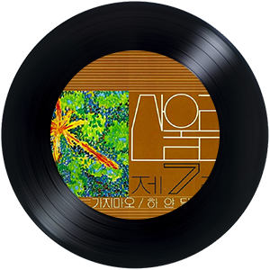
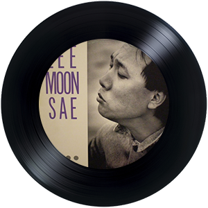

-
신해철 '그대에게'
그룹 무한궤도가 1988년 MBC 대학가요제에 출전해서 대상을 거머쥔 데뷔곡이자,
리더인 신해철의 음악 인생을 상징하는 노래.
무한궤도에서 기타와 보컬을 맡았던 신해철이 작사/작곡했으며
솔로 활동과 N.EX.T 결성 등을 거치면서도 꾸준히 불렀다.
처음 선을 보인 대학가요제 이후 30년이 넘은 현재까지도
학교 축제라든가 운동회 등에서 응원가로 많이 쓰이는 덕분에
현재의 어린이들도 접할만큼 유명한 노래.
-
이상은 '담다디'
담다디는 당시 18세의 한양대 연극영화과 1학년생이었던 이상은이
1988년 강변가요제 대상곡으로 이상은의 가수 데뷔곡이다.
당시 이 노래의 인기는 폭발적이었는데,
이듬에 1989년 같은 제목의 영화 담다디가 만들어 지기도 했다.
178cm 큰키에 중성적인 스타일로 여성들에게도 큰 사랑을 받았던 가수였다.
- 
-
산울림 '청춘'
청춘은 대한민국 록밴드 산울림 1981년 발표한 7번째 스튜디오 앨범 수록곡이다.
1981년 이 노래가 발표됐을 때 산울림의 파격에 화들짝 놀랐다.
그 파격을 권력자들은 반항으로 읽을만큼 당시 파격적인 곡이었다.
산울림 보컬이자 가수인 김창완이 작사/작곡한 곡으로 '청춘'은 세월을 담아낸 곡
-
소방차 '어젯밤 이야기'
소방차는 1987년에 데뷔한 남성 3인조 댄스 팝 음악 그룹이다.
소방차는 현재 한국 아이돌 그룹의 원형으로 평가 받을 만큼 대단한 파급력을 가진 그룹
'어젯밤 이야기' 노래는 지금까지도 여러 가수들이 커버할 만큼 중독적인 댄스곡이다.
드라마 응답하라 1988에 주인공들이 이 곡으로 장기자랑 노래로 삽입하였다.
- 
-
이문세 '소녀'
1985년에 발매된 가수 이문세의 3집 음반 수록곡 '소녀' 이다.
특유의 서정적인 가사와 음이 인상 깊은 곡이다.
피아노 반주가 곡의 아련한 분위기를 더해주고 있다
-
송골매 '어쩌다 마주친 그대'
1982년에 발표된 송골매의 노래. 2집의 타이틀 곡이다.
1980년대 송골매가 가요계를 장악하던 시절의 대표적인 히트곡
구창모의 전성기 시절 뛰어난 가창력을 들을 수 있는 곡으로 사실상
1980년대를 대표하는 최대 히트곡 중의 하나이자
한국 록 음악 역사상 최고의 명곡 중 하나다.